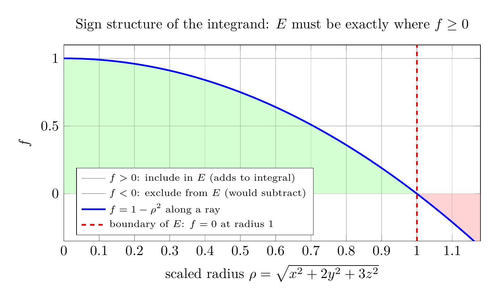

Please solve the problem in the following image.
(Image `20260929_003943_774267_utc_0800_0.png`. Alt text: Image: human_20260929_003943_774267_utc_0800)
20260929_003943_774267_utc_0800_0.png
End of problem
Answer
# Maximizing a Triple Integral over a Free Region
**The key idea:** we get to *choose* the region $E$. The integral $\iiint_E f\,dV$ is maximized precisely by taking $E$ to be the set of all points where the integrand is nonnegative:
- If $f(P) > 0$ at some point $P \notin E$, adding a small ball around $P$ to $E$ would **increase** the integral — so $E$ must include all of $\{f > 0\}$.
- If $f(P) < 0$ at some point $P \in E$, removing a small ball around $P$ from $E$ would **increase** the integral — so $E$ must exclude all of $\{f < 0\}$.
Hence the optimal region is $\{f \ge 0\}$. The plot below shows this sign structure along a ray from the origin (with $\rho = \sqrt{x^2+2y^2+3z^2}$, the integrand is $f = 1-\rho^2$).
---
\documentclass[border=10pt]{standalone}
\usepackage{pgfplots}
\pgfplotsset{compat=1.17}
\begin{document}
\begin{tikzpicture}
\begin{axis}[
width=12cm, height=6.5cm,
xlabel={scaled radius $\rho=\sqrt{x^2+2y^2+3z^2}$},
ylabel={$f$},
title={Sign structure of the integrand: $E$ must be exactly where $f\ge 0$},
xmin=0, xmax=1.18, ymin=-0.35, ymax=1.1,
grid=major,
legend pos=south west,
legend cell align=left,
legend style={font=\scriptsize},
samples=100,
]
% positive fill
\addplot[draw=none, fill=green!50, opacity=0.35, domain=0:1] {1-x^2} \closedcycle;
\addlegendentry{$f>0$: include in $E$ (adds to integral)}
% negative fill
\addplot[draw=none, fill=red!50, opacity=0.35, domain=1:1.18] {1-x^2} \closedcycle;
\addlegendentry{$f<0$: exclude from $E$ (would subtract)}
% curve
\addplot[blue, very thick, domain=0:1.18] {1-x^2};
\addlegendentry{$f = 1-\rho^2$ along a ray}
% boundary line
\addplot[red, dashed, very thick] coordinates {(1,-0.35) (1,1.1)};
\addlegendentry{boundary of $E$: $f=0$ at radius 1}
\end{axis}
\end{tikzpicture}
\end{document}

pgfplots_0.png
---
## Part (a): The region $E$
With $f(x,y,z) = 1 - x^2 - 2y^2 - 3z^2$, the condition $f \ge 0$ gives
$$
E = \{(x,y,z)\ :\ x^2 + 2y^2 + 3z^2 \le 1\}.
$$
This is a solid **ellipsoid** centered at the origin with semi-axes
$$
a = 1, \qquad b = \tfrac{1}{\sqrt{2}}, \qquad c = \tfrac{1}{\sqrt{3}}
$$
along the $x$, $y$, $z$ directions respectively (the integrand falls off fastest in the $z$-direction, so the ellipsoid is flattest there). The plot below shows $E$ together with its inner level surface $f = 0.5$ and the three semi-axis rays.
---
pgfplots_1.png
---
The coordinate-plane cross-sections confirm the semi-axes: slicing at $z=0$ gives the ellipse $x^2 + 2y^2 = 1$, and slicing at $y=0$ gives $x^2 + 3z^2 = 1$.
---
pgfplots_2.png
---
## Part (b): Exact maximum value
**Step 1 — Map the ellipsoid to the unit ball.** Substitute
$$
u = x, \qquad v = \sqrt{2}\,y, \qquad w = \sqrt{3}\,z,
$$
so that $x^2 + 2y^2 + 3z^2 = u^2 + v^2 + w^2$ and $E$ becomes the unit ball $u^2+v^2+w^2 \le 1$. Solving for $x,y,z$, the Jacobian is
$$
\frac{\partial(x,y,z)}{\partial(u,v,w)} = 1 \cdot \tfrac{1}{\sqrt{2}} \cdot \tfrac{1}{\sqrt{3}} = \tfrac{1}{\sqrt{6}}.
$$
**Step 2 — Integrate in spherical coordinates.** With $u = r\sin\varphi\cos\theta$, $v = r\sin\varphi\sin\theta$, $w = r\cos\varphi$, the integrand becomes $1 - r^2$ and
$$
\iiint_E (1 - x^2 - 2y^2 - 3z^2)\,dV
= \frac{1}{\sqrt{6}} \int_0^{2\pi}\!\!\int_0^{\pi}\!\!\int_0^{1} (1 - r^2)\, r^2 \sin\varphi \, dr \, d\varphi \, d\theta.
$$
**Step 3 — Evaluate.**
$$
\int_0^{2\pi} d\theta = 2\pi, \qquad \int_0^{\pi} \sin\varphi\, d\varphi = 2, \qquad \int_0^1 (r^2 - r^4)\, dr = \tfrac{1}{3} - \tfrac{1}{5} = \tfrac{2}{15},
$$
so
$$
\iiint_E (1 - x^2 - 2y^2 - 3z^2)\,dV = \frac{1}{\sqrt{6}} \cdot 2\pi \cdot 2 \cdot \frac{2}{15} = \boxed{\dfrac{4\sqrt{6}\,\pi}{45}} \approx 0.68403.
$$
**Cross-check (moment formula).** Over an ellipsoid with semi-axes $a,b,c$, the volume is $V = \frac{4}{3}\pi a b c$ and $\iiint x^2\,dV = \frac{a^2}{5}V$ (and similarly for $y^2, z^2$). With $a=1$, $b^2 = 1/2$, $c^2 = 1/3$:
$$
\iiint_E f\,dV = V - 1\cdot\tfrac{a^2}{5}V - 2\cdot\tfrac{b^2}{5}V - 3\cdot\tfrac{c^2}{5}V = V\left(1 - \tfrac{1+1+1}{5}\right) = \tfrac{2}{5}V = \tfrac{2}{5}\cdot\tfrac{4\pi}{3\sqrt{6}} = \frac{4\sqrt{6}\,\pi}{45}.\ \checkmark
$$
Both the symbolic spherical-coordinate computation and a $4{,}000{,}000$-sample Monte Carlo estimate ($0.68365$) confirm this value. As a sanity check on the logic of part (a): the integrand equals $0$ on the boundary of $E$, is positive inside it, and is negative outside it — so any other region gives a strictly smaller integral.
$$
\text{Maximum value} = \boxed{\dfrac{4\sqrt{6}\,\pi}{45} \approx 0.68403}
$$